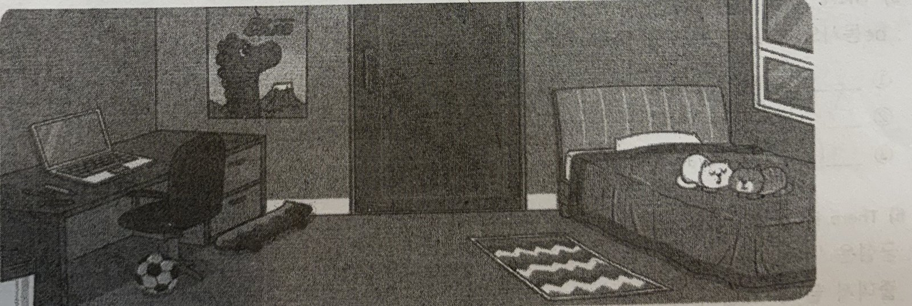
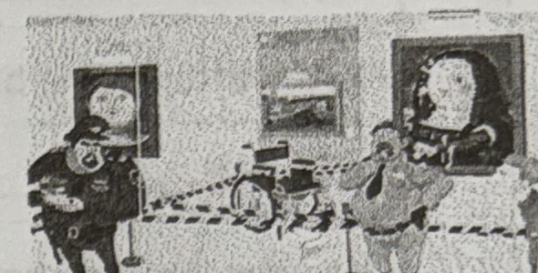
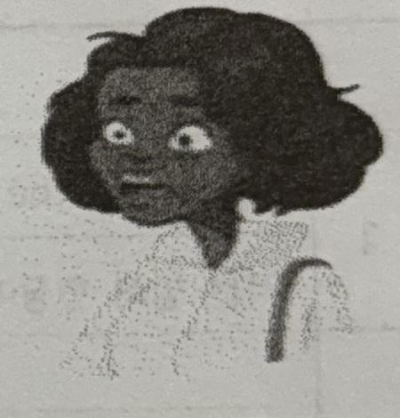

ㄷ | 목동중학교 | Lesson 4 | 1학년 ___반 ___번 | 문법 |
2026년 월 일 | be going to | 이름 : |
1. be going to의 형태
: 가까운 ㅁ ㄹ(미래)의 일이나 ㄱ ㅎ(계획)을 나타내며 ~할 것이다 , ~할 예정이다 라는 뜻으로 쓰인다.
: 「주어 + be going to + ㄷ ㅅ ㅇ ㅎ(동사원형)」의 형태로 씀. *구어체에서 “going to”를 줄여서 gonna 로 표현하기도 함.
He is going to play soccer after school. 그는 방과 후에 축구를 할 것입니다.
I am going to meet Jenny and Sue tomorrow. 나는 내일 Jenny와 Sue를 만날거야.
2. be gong to & will 비교하기
be going to | will |
미래에 대한 계획 | (그 순간 결정된) ~하겠다 라는 의지 |
A: There’s no milk. B: I know. I’m going to go and get some when this TV shows finishes. | A: There’s no milk. B: I will go and get some milk right now. |
QUIZ! A: Jane is sick right now and she’s at the hospital.
B: Yes, I know. I am going to visit her this weekend. (visit)
A: Jane is sick right now and she’s at the hospital.
B: Oh really? I’m so sorry to hear that. I will visit her this weekend. (visit)
3. be gong to 부정문
: be동사 뒤에 not 을 붙여 「be동사 + not going to」의 형태로 씀
그는 박물관에 가지 않을 것입니다. He is not going to go to the museum.
그들은 오늘 밤 떠나지 않을 것입니다. They are not going to leave tonight.
3. be going to 의문문
: 주어 와 be동사 의 자리를 바꾼다. 대답은 be동사의 의문문의 대답과 같음
A: Are you going to buy a shirt? (당신은 셔츠를 구매할 건가요?)
B: Yes, I am. / No, I’m not.
A: Is he going to run a marathon? (그는 마라톤을 뛸 예정인가요?)
B: Yes, he is. / No, he isn’t.
[Let’s practice!] 우리말과 일치하도록 주어진 단어를 활용하여 문장을 완성해 봅시다. (부정형은 축약할 것)
1. 나는 내 방을 청소할 것이다. (clean) → I am going to clean my room.
2. 그들은 저녁으로 파스타를 먹지 않을 것이다. (eat) → They aren’t going to eat pasta for dinner.
3. 너는 방과 후에 영화를 볼 예정이니? (watch) → Are you going to watch a movie after school?
4. 그녀는 언제 자신의 숙제를 할 예정입니까? (do) → When is she going to do her homework?
5. 그는 어제 병원에 갈 예정이었다. (see) → He was going to see a doctor yesterday.
[Let’s make a sentence!] “I am going to ______________________________________________.”
ㄷ | 목동중학교 | Lesson 5 | 1학년 반 번 |
2026년 월 일 | Vocabulary | 이름 : |
★ 영영풀이를 읽고 빈칸에 영어 단어 또는 한글 뜻을 쓰세요.
No | 단어 | 한글 뜻 | 영영 풀이 |
1 | bakery | 빵집 | n. a place where bread and cakes are made or sold 빵과 케이크를 만들거나 파는 곳 |
2 | code | 암호 | n. a set of letters, numbers, symbols, etc., that is used to secretly send messages to someone 누군가에게 비밀리에 메시지를 보내기 위해 사용하는 글자, 숫자, 기호 등의 조합 |
3 | crime | 범죄 | n. an action that the law does not allow 법이 허용하지 않는 행동 |
4 | criminal | 범죄자 | n. a person who does something against the law, like stealing or hurting others 훔치거나 다른 사람을 해치는 것처럼 법에 어긋나는 일을 하는 사람 |
5 | damage | 손상을 입히다 | v. to physically harm something 무언가를 물리적으로 손상시키다 |
6 | expensive | 비싼 | a. costing a lot of money 돈이 많이 드는 |
7 | explain | 설명하다 | v. to tell someone about something so that he or she can understand it 다른 사람이 이해할 수 있도록 무언가에 대해 말해 주다 |
8 | eyewitness | 목격자 | n. someone who saw a crime or an accident 범죄나 사고를 목격한 사람 |
9 | fall off | 떨어지다 | to drop to the ground from a high object 높은 곳에서 땅으로 떨어지다 |
10 | feed | 먹이를 주다 | v. to give food to animal 동물에게 먹이를 주다 |
11 | flash | 플래시 | n. a bright light on a camera that you use when taking photographs inside a building 건물 안에서 사진을 찍을 때 사용하는 카메라의 밝은 빛 |
12 | guard | 경비원 | n. a person whose job is to protect a person, place or thing from danger or attack 사람, 장소, 물건을 위험이나 공격으로부터 지키는 일을 하는 사람 |
13 | height | 키 | n. how tall someone or something is 사람이나 사물이 얼마나 큰지를 나타내는 것 |
14 | janitor | n. 청소부, 관리인 | n. a person in charge of cleaning and fixing things in a building 건물 안의 청소와 수리를 담당하는 사람 |
15 | language | n. 언어 | n. the system of words and grammar that people living in a country or area use to speak and write to each other 한 나라나 지역에 사는 사람들이 서로 말하고 쓸 때 사용하는 단어와 문법 체계 |
16 | owner | n. 주인 | n. someone who owns something 무언가를 소유한 사람 |
17 | pet | n. 반려동물 | n. an animal that you keep at home 집에서 기르는 동물 |
18 | reason | n. 근거 | n. something that makes it right or fair to do something 어떤 일을 하는 것을 옳거나 정당하게 만들어 주는 것 |
19 | rule | n. 규칙 | n. a statement of what you can or cannot do 할 수 있는 것과 할 수 없는 것에 대한 진술 |
20 | run away | 도망치다 | to leave a place or person secretly and suddenly 어떤 장소나 사람을 몰래 갑자기 떠나다 |
21 | scene | n. 현장, 장면 | n. a place where something happens; a piece of a film or play, usually showing one situation 어떤 일이 일어나는 장소; 보통 하나의 상황을 보여 주는 영화나 연극의 한 부분 |
22 | secret | a. 비밀의 | a. not known or seen by others 다른 사람에게 알려지거나 보이지 않는 |
23 | statement | n. 진술 | n. something that you say or write officially 공식적으로 말하거나 쓰는 것 |
24 | steal | v. 훔치다 | v. to take something that belongs to someone else 다른 사람에게 속한 것을 가져가다 |
25 | sunflower | n. 해바라기 | n. a tall plant with a large yellow flower and a brown center 크고 노란 꽃과 갈색 중심부를 가진 키가 큰 식물 |
26 | suspect | n. 용의자 | n. a person who is believed to be guilty of something 어떤 일에 대해 유죄라고 여겨지는 사람 |
▣ Lesson 5 어휘 해설 · 시험 포인트 · 품사 표기 읽는 법 : n.(명사) / v.(동사) / a.(형용사). 시험에서 빈칸에 쓸 단어의 품사를 먼저 확인해야 합니다. · 혼동하기 쉬운 ‘사람 vs 행위’ 어휘 - crime(범죄 = 행위) ↔ criminal(범죄자 = 사람) : -al이 붙어 사람이 됩니다. - suspect(용의자) : 아직 범인으로 확정되지 않은 사람. criminal과 구별해서 출제됩니다. - eyewitness(목격자) = eye(눈) + witness(증인) → 직접 본 사람. - guard(경비원, 지키는 사람) ↔ janitor(청소·관리인, 건물을 관리하는 사람). - owner(주인) ← own(v. 소유하다) + -er. · 동사 활용 주의 - damage : v. 손상을 입히다 / n. 손상. → The flash can damage paintings. - feed – fed – fed (불규칙). feed the fish = 물고기에게 먹이를 주다. - steal – stole – stolen. steal + 물건 (사람 ✗) ↔ rob + 사람. - explain은 explain A to B 형태. ‘explain me ~’는 틀린 표현입니다. · 구동사(phrasal verb) - fall off : ~에서 떨어지다 → The paint is falling off the wall. - run away : 도망치다. 뒤에 from ~ 을 붙여 ‘~로부터 도망치다’. · 철자·파생 주의 - height(키, 높이) ← high(높은). 철자에 g가 들어가는 점 주의. - secret : a. 비밀의 / n. 비밀 (두 품사 모두 쓰임). - statement(진술) ← state(v. 진술하다) + -ment. - expensive(비싼) ↔ cheap(값이 싼). expensive는 긴 단어이므로 more expensive – most expensive. · 본문 연결 포인트 - Sunflowers(해바라기)는 Van Gogh의 그림. flash(플래시) 사용 금지 장면과 이어집니다. - rule(규칙) · reason(근거)은 Lesson 5의 must not(금지) 표현과 묶여 출제되기 쉽습니다. |
A 다음 빈칸에 알맞은 말을 [보기]에서 찾아 쓰시오.
[보기] | golden | inside | scene | wheelchair | remember |
1 I found my keys inside my bag.
나는 가방 안에서 열쇠를 찾았다.
2 I remember my first day of school.
나는 학교에서의 첫날을 기억한다.
3 The movie starts with a scary scene .
그 영화는 무서운 장면으로 시작한다.
4 I injured my leg so I used a wheelchair .
나는 다리를 다쳐서 휠체어를 사용했다.
5 The leaves turned golden in the autumn.
가을에 나뭇잎이 황금빛으로 물들었다.
B 우리말과 의미가 같도록 빈칸에 알맞은 말을 쓰시오.
1 그는 비밀 코드를 풀었다.
→ He solved the secret code.
2 뒤를 돌아서 눈을 떠. 짜잔! 너를 위한 거야.
→ Turn around and open your eyes. Ta-da! It's for you.
3 페인트가 벽에서 떨어지기 시작하고 있다.
→ The paint is starting to fall off the wall.
4 디저트로 케이크 한 조각 먹을래?
→ Would you like to have a piece of cake for dessert?
5 나는 매일 저녁 친구들과 전화로 이야기하는 것을 좋아해.
→ I like to talk on the phone with my friends every evening.
◆ B-4 원본 학생답안 'a piece aof' → 표준형 'a piece of'로 교정함.
◆ B-5 원본 학생답안 'talk one the phone' → 표준형 'talk on the phone'으로 교정함.
C Crossword Puzzle
|
|
|
|
|
|
|
|
|
| 1h |
|
|
| 2r | u | l | 3e |
|
|
|
|
|
|
| 4c |
|
| e |
|
|
|
|
|
| y |
|
|
|
| 5r |
|
| r |
| 6w | i | g |
|
|
| 7c |
| e |
8s | e | c | r | e | t |
| i |
|
| g |
|
|
|
| o |
| w |
|
|
|
| a |
|
| m |
|
| h |
|
| 9f |
| d |
| i |
|
|
|
| s |
|
| i |
| 10s | t | a | t | e | m | e | n | t |
|
|
|
| o |
|
| n |
| t |
|
|
| e |
|
|
| n |
|
| 11l | a | n | g | u | a | g | e |
|
|
| d |
|
|
| e |
|
|
|
|
|
|
| l |
| a |
|
|
|
|
|
|
| s |
|
|
|
|
|
|
|
|
| l |
|
|
|
|
|
|
| s |
←→ 가 로 2. n. Being kind to everyone is our classroom r______. → rule (모두에게 친절하기는 우리 학급 규칙이다.) 6. n. 가발 → wig
8. a. not known or seen by others → secret (다른 사람에게 알려지거나 보이지 않는) 10. n. 진술 → statement
11. n. Lily can speak five l______s. → language (Lily는 다섯 개의 언어를 말할 수 있다.) | ↕ 세 로 1. n. how tall someone or something is → height (사람이나 사물이 얼마나 큰지) 3. n. someone who saw a crime or an accident → eyewitness (범죄나 사고를 목격한 사람) 4. n. The police caught the c______ this morning. → criminal (경찰은 오늘 아침 그 범죄자를 붙잡았다.) 5. n. 근거 something that makes it right or fair to do something → reason (어떤 일을 하는 것을 옳거나 정당하게 만드는 것) 7. n. 암호 → code
9. v. Don't f______ the fish in the pond. → feed (연못에 있는 물고기에게 먹이를 주지 마세요.) 10. v. to take something that belongs to someone else → steal (다른 사람에게 속한 것을 가져가다) |
▣ A · B 문항별 해설 · A. [보기]에서 골라 쓰기 — 문장 속 ‘품사 자리’를 먼저 확인 - 1 inside : 전치사 ‘~의 안에’. found my keys inside my bag (가방 안에서). - 2 remember : ‘기억하다’ (↔ forget 잊다). 뒤에 목적어 my first day가 오므로 동사 자리. - 3 scene : ‘장면’. a scary scene(무서운 장면). 관사 a 뒤 형용사 scary 다음이므로 명사 자리. cf. scenery(경치)와 구별. - 4 wheelchair : ‘휠체어’. use a wheelchair(휠체어를 사용하다). - 5 golden : ‘황금빛의’. 「turn + 형용사」 = ~하게 변하다 → turned golden(황금빛으로 물들었다). · B. 우리말에 맞게 쓰기 — 숙어를 통째로 외우기 - 1 secret code : 비밀 코드. secret은 여기서 명사 code를 꾸미는 형용사. - 2 Turn around : ‘뒤로 돌다’. 주어 없이 시작하는 명령문이므로 동사원형 Turn, 문장 첫 글자라 대문자. - 3 fall off : ‘~에서 떨어져 나가다’. start to+동사원형 / start+-ing 둘 다 가능합니다. - 4 a piece of cake : 케이크 ‘한 조각’. cake는 셀 수 없는 명사라 수량 표현이 필요 — a piece of / a slice of / a cup of. - 5 talk on the phone : ‘전화로 이야기하다’. 전치사 on 을 씁니다. (by phone도 가능하지만 이때는 the 를 쓰지 않습니다.) |
▣ Crossword 정답 단어 정리 · 가로 (Across) - 2 rule 규칙 / 6 wig 가발 / 8 secret 비밀의 / 10 statement 진술 / 11 language 언어 · 세로 (Down) - 1 height 키·높이 / 3 eyewitness 목격자 / 4 criminal 범죄자 / 5 reason 근거 - 7 code 암호 / 9 feed 먹이를 주다 / 10 steal 훔치다 · 교차점 확인 요령 - 10번은 가로 statement 와 세로 steal 이 첫 글자 s 를 공유합니다. - 11번 language 의 마지막 e 는 세로 steal 의 세 번째 글자 e 와 만납니다. - 1번 height 의 t 는 가로 statement 의 두 번째 글자 t 와 만납니다. - 3번 eyewitness 의 t 는 가로 statement 의 마지막 글자 t 와 만납니다. |
ㄷ | 목동중학교 | Lesson 5 | 1학년 반 번 |
2026년 월 일 | Listening | 이름 : |
▶ 허락 구하고 답하기 •상대방에게 허락을 구할 때는 “May(Can) I ~?(~해도 되니?)”라고 물어볼 수 있어요. •허락할 때의 대답은 Yes, you may. 또는 Sure./Sure, go ahead ./ Of course./ No problem 등이고, 허락하지 않을 때는 No, you may not./I’m sorry , but you can’t . 라고 해요. | ▶ 금지하기 •금지를 나타낼 때 「must not[ mustn’t ]+동사원형」으로써 ‘~하면 안 돼.’라는 의미를 나타낼 수 있어. |
A
1.
W: Excuse me, but you must not talk on the phone here.
실례합니다, 여기서는 통화하시면 안 됩니다.
B: I’m terribly sorry. I’ll turn off my phone.
정말 죄송합니다. 핸드폰을 꺼 놓을게요.
W: You don’t have to. Texting is OK.
그럴 필요는 없어요. 문자하는 것은 괜찮아요.
B: I see. Thank you.
아, 네. 감사합니다.
2.
G: Excuse me. May I touch this golden bear?
실례합니다. 이 황금곰을 만져봐도 될까요?
M: No, you may not. You must not touch anything in this room.
아니요, 안 됩니다. 이 방 안에 있는 것은 아무것도 만지면 안 됩니다.
G: OK, I understand.
네, 알겠습니다.
3.
B: May I go to the video room, Mom?
비디오방에 가도 돼요, 엄마?
W: Of course, but don’t run .
물론이지, 하지만 뛰지는 마.
B: Why not?
왜 안 돼요?
W: Look at that sign. You must not run inside the museum.
저 표지판을 봐. 박물관 안에서 뛰면 안 돼.
4.
B: May I bring food into the museum?
박물관에 음식을 가지고 들어가도 되나요?
W: No, you may not . You must not bring any food inside.
아니요, 안 됩니다. 음식물은 실내에 가지고 들어갈 수 없습니다.
B: How about water?
물은 어때요?
W: Only bottled water is OK.
병에 든 물은 괜찮습니다.
◆ 개념상자 「I’m ______, but you ______.」의 정답은 sorry / can’t 입니다. 원본 학생답안 ‘afraid’는 「I’m afraid (that) you can’t.」 형태로 쓰이므로 but과 함께 쓰지 않습니다.
▣ 핵심 표현 해설 — 허락 구하기 / 금지하기 · ① 허락 구하기 - May I ~? (정중·격식) / Can I ~? (구어체) / Could I ~? (가장 정중) - May 는 상대가 ‘허락을 부여한다’는 느낌이라 박물관 직원·부모·교사 등 권한자와의 대화에 잘 어울립니다. · ② 허락할 때의 대답 - Yes, you may. / Sure. / Sure, go ahead. / Of course. / No problem. - go ahead = ‘그렇게 하세요’ 라는 뜻의 관용 표현입니다. · ③ 거절할 때의 대답 - No, you may not. / I’m sorry, but you can’t. / I’m afraid you can’t. - may 에는 축약형이 없습니다. mayn’t (✗) → No, you may not. 로 써야 합니다. - 「I’m afraid」는 but 없이 「I’m afraid (that) you can’t.」 로 이어 씁니다. · ④ 금지하기 : must not [mustn’t] + 동사원형 - ‘~하면 안 된다’ 는 강한 금지. 규칙·법·표지판에 자주 쓰입니다. - ★ must not ↔ don’t have to 구별이 시험 최다 출제 포인트입니다. - You must not talk. = 말하면 안 된다 (금지) - You don’t have to talk. = 말할 필요가 없다 (불필요) - A-1에서 W가 ‘You don’t have to.’ 라고 한 것은 ‘(전화를 끌) 필요는 없어요’ 라는 뜻입니다. · ⑤ 문항별 추가 포인트 - A-1 Texting is OK. → 동명사(-ing)가 주어. 동명사 주어는 단수 취급하므로 is 를 씁니다. - A-1 turn off ↔ turn on : 전원을 끄다/켜다. 목적어가 대명사면 turn it off 처럼 사이에 넣습니다. - A-3 don’t run : 명령문의 부정은 「Don’t + 동사원형」. - A-4 bottled water : ‘병에 든 물’. bottled 는 과거분사가 형용사로 쓰인 형태입니다. - A-4 any food : 부정문에서 ‘어떤 ~도’ 의 의미로 any 를 씁니다. |
C
M: Everybody, look over here, please. This is Sunflowers by Van Gogh. 여러분, 이쪽을 봐주세요. 이것은 반 고흐의 ‘해바라기’입니다. G: Wow, this is my favorite painting. May I take a picture of it? 와, 제가 제일 좋아하는 그림이에요. 사진을 찍어도 될까요? M: Yes, you may, but you must not use the flash. 네, 그래도 됩니다. 하지만 플래시는 사용하시면 안 됩니다. G: Why not? It’s a little dark in here. 왜 안 되나요? 여기는 좀 어두운데요. M: I’m sorry, but using the flash can damage paintings. 죄송하지만 플래시를 사용하는 것은 그림을 훼손시킬 수 있습니다. G: Oh, I didn’t know that. 아, 몰랐어요. M: Everyone, we’ll move on to Monet’s paintings next. 여러분, 우리는 다음으로 모네의 그림으로 이동하겠습니다. G: Great! 좋아요! |
D. You’re at home. Look at the pictures and write the questions you’ll ask your parents and their answers. (may/can 표현 사용)
[그림] √ | 1. Q: May I use my phone? A: Yes , you can . 제 휴대폰을 사용해도 될까요? / 응, 그래도 돼. |
[그림] X | 2. Q: May I watch TV ? (TV) A: No , you can’t . TV를 봐도 될까요? / 아니, 안 돼. |
[그림] X | 3. Q: May I eat cookies ? (cookie) A: No , you can’t . 쿠키를 좀 먹어도 될까요? / 아니, 안 돼. |
E. What question will you ask your teacher?
1. Please, May I open the window? 2. May I close the window? ? (창문을 닫아도 될까요?) 3. May I go to the blackboard? ? (칠판 앞으로 가도 될까요?) 4. May I come in? ? (들어가도 될까요?) 5. May I go to the restroom? ? (화장실 가도 될까요?) 6. May I clean the board? ? (칠판 지워도 될까요?) 7. May I throw away the trash? ? (쓰레기 버려도 될까요?) 8. May I turn on the light? ? (불 켜도 될까요?) 9. May I turn off the light? ? (불 꺼도 될까요?) 10. May I take the blind down? ? (블라인드 내려도 될까요?) |
| ||||||||||||
◆ D의 대답은 Yes, you can. / No, you can’t. 외에 Yes, you may. / No, you may not. 도 모두 정답입니다. (지시문: may/can 표현 사용)
◆ D·E의 원본 삽화(사진 자료)는 재현이 불가하여 [그림] 자리 표시로 대체했습니다. 원본 그림을 그대로 쓰시려면 해당 칸에 이미지를 붙여넣으시면 됩니다.
◆ E-10 정답은 ‘May I take the blind down?’ 또는 ‘May I pull down the blind?’ 모두 가능합니다.
▣ C 대화 해설 · take a picture of ~ : ~의 사진을 찍다. (take a photo of ~ 도 같은 뜻) · you must not use the flash : must not = 금지. 박물관 안내문에 자주 나오는 표현입니다. · It’s a little dark in here. : 「a little + 형용사」 = ‘조금 ~한’. in here = ‘이 안은’. · Using the flash can damage paintings. : 동명사구 Using the flash 가 주어. 조동사 can 뒤에는 동사원형 damage. · move on to ~ : ~로 넘어가다, 옮겨 가다. → We’ll move on to Monet’s paintings. · Sunflowers 처럼 작품명은 이탤릭체로 표기합니다. |
▣ D 해설 — 「May I ~?」의 대답에는 may 와 can 이 모두 가능합니다 · 원칙 : 물어본 조동사를 그대로 받아 대답한다 - May I ~? → Yes, you may. / No, you may not. (교과서 기본형) - 3쪽 개념상자에도 ‘허락할 때의 대답은 Yes, you may.’ 라고 제시되어 있습니다. · 실제 회화에서는 can 이 더 흔하다 - Yes, you can. / No, you can’t. — D 지시문이 ‘(may/can 표현 사용)’ 이므로 둘 다 정답 처리됩니다. - 따라서 1번 A: Yes, you may(can). / 2·3번 A: No, you may not(can’t). 모두 인정됩니다. · 뉘앙스와 형태 차이 - may : 격식체. 권한을 가진 사람이 허락을 ‘부여’하는 느낌 (교사·부모·직원). - can : 구어체. 친구·가족 간 일상 대화에서 자연스럽습니다. - 축약형 주의 — mayn’t 는 쓰지 않습니다. 축약은 can’t 만 가능. - ★ No, you must not. 은 ‘금지’라서 뜻이 다릅니다. 단순 거절에는 may not / can’t 를 씁니다. |
▣ E 해설 — 교실 영어(Classroom English) · 모든 문장이 「May I + 동사원형 ~?」 형태입니다. I 뒤에는 반드시 동사원형이 옵니다. · turn on the light(불을 켜다) ↔ turn off the light(불을 끄다) · take the blind down = pull down the blind (블라인드를 내리다) · throw away the trash(쓰레기를 버리다) / clean the board(칠판을 지우다) / go to the restroom(화장실에 가다) · come in(들어가다) / go to the blackboard(칠판 앞으로 가다) / close the window(창문을 닫다) · Please 는 문장 앞(Please, may I ~?) 또는 문장 끝(May I ~, please?)에 붙일 수 있습니다. |
ㄷ | 목동중학교 | Lesson 5 | 1학년 반 번 |
2026년 월 일 | Grammar A-비교급/최상급 | 이름 : |
◆ 비교급 1. 비교급의 쓰임 : 둘 이상을 비교하여 말할 때 사용 2. 짧은 단어 비교급 만드는 방법 1) 형용사/ 부사 원급 + er + than + 비교대상 • I’m tall. 나는 키가 커. (원급) → I’m taller than you. 나는 너보다 키가 더 커. (비교급) • I can run fast. 나는 빨리 달릴 수 있어. (원급) → I can run faster than him. 나는 그보다 더 빨리 달릴 수 있어. (비교급) 3. 긴 단어 비교급 만드는 방법 1) more 형용사/ 부사 원급 + than + 비교대상 • This sofa is more comfortable than the other one. 이 소파가 다른 소파보다 더 편해.(비교급) • My dad drives more carefully than my brother. 나의 아빠는 나의 오빠보다 더 조심스럽게 운전해.(비교급) 4. 짧은 단어와 긴 단어 구분하기 1) 짧은 단어란? ‘1음절’, ‘2음절’ 단어 중 ( y )로 끝나는 단어 • thick 두꺼운 → thicker • happy 행복한 → happier 2) 긴 단어란? ‘2음절’ 이상 단어 • difficult 어려운 → more difficult 더 어려운 5. 비교급 강조 : very 를 쓰지 않고 much , still , even , far , a lot (훨씬)을 쓴다. • Today is much hotter than yesterday. 오늘은 어제보다 훨씬 더 덥다.
◆ 최상급 1. 최상급의 쓰임: ‘( 가장 ) 맛있어’, ‘제일 좋아’ 등 셋 이상을 비교해서 최고의 것을 말할 때 사용. 2. 최상급 만드는 방법 : ① 짧은 단어 : the 형용사/부사 최상급 + (명사) ② 긴 단어 : the most 형용사/부사 + (명사) • David is the tallest student in our class. 데이비드는 우리 학급에서 키가 가장 큰 학생이야. • Happiness is the most important thing in my life. 행복은 나의 삶에서 가장 중요한 거야. ③ 최상급 뒤에는 주로 「 in +장소나 범위」 또는 「 of +비교 대상」을 씁니다. • Jerry is the cutest mouse in the world. 제리는 세상에서 가장 귀여운 쥐이다. • Tom is the most foolish cat of all. 톰은 모두 중에서 가장 어리석은 고양이이다. 3. 비교급으로 최상급 표현: 비교급 + than + any other + 단수명사 • Jerry is the cutest mouse in the world. 제리는 세상에서 가장 귀여운 쥐이다. • → Jerry is cuter than any other mouse in the world. 제리는 세상의 어떤 다른 쥐보다도 더 귀엽다. |
◆ 최상급 3번 예문의 정답은 ‘Jerry is cuter than any other mouse in the world.’ 입니다. (any other + 단수명사)
▣ 비교급 해설 · 기본 형태 - 짧은 단어 : 원급 + -er + than + 비교대상 → taller than you - 긴 단어 : more + 원급 + than + 비교대상 → more comfortable than the other one - than 뒤에는 비교 대상이 옵니다. 원칙은 주격(than I)이지만 회화에서는 목적격(than me)도 널리 쓰입니다. · 짧은 단어 / 긴 단어 구분 - 짧은 단어 = 1음절 단어, 또는 -y 로 끝나는 2음절 단어 → thick–thicker, happy–happier - 긴 단어 = 그 밖의 2음절 이상 단어 → difficult–more difficult, careful–more carefully - -ly 로 끝나는 부사는 대부분 긴 단어 취급 → slowly–more slowly (단, early 는 예외로 earlier) · ★ 비교급 강조 (시험 최다 출제) - much / still / even / far / a lot + 비교급 = ‘훨씬 더 ~한’ - very 는 비교급을 강조할 수 없습니다. very hotter (✗) → much hotter (○) - 반대로 very 는 원급만 강조합니다. very hot (○) |
▣ 최상급 해설 · 기본 형태 - 셋 이상을 비교해 ‘가장 ~한’ 을 나타냅니다. - 짧은 단어 : the + 원급-est + (명사) → the tallest student - 긴 단어 : the most + 원급 + (명사) → the most important thing · ★ 최상급 뒤의 전치사 in / of - in + 장소·범위(단수 명사) → in the world, in our class, in Korea - of + 비교 대상(복수 명사·숫자) → of all, of the three robots, of the four - 구별 기준은 ‘장소·집단이면 in, 무리 전체를 나열하면 of’ 입니다. · ★ 비교급으로 최상급 표현하기 - 비교급 + than + any other + 단수명사 = 최상급과 같은 뜻 - Jerry is the cutest mouse in the world. - = Jerry is cuter than any other mouse in the world. (mouse 는 반드시 단수) - any other 뒤에 복수(mice)를 쓰면 틀립니다. · 보충 - 부사의 최상급 앞에서는 the 를 생략할 수 있습니다. → He runs (the) fastest. - 최상급 앞에 서수·소유격이 오면 the 를 쓰지 않습니다. → my best friend |
◆ 주의해야 하는 비교급·최상급 만드는 법
규칙 | 원급 | 비교급(더~) | 최상급(가장~) |
① ‘-e’로 끝나는 단어 r / st 만 붙임 | nice | nicer | nicest |
large | larger | largest | |
② ‘-y’로 끝나는 단어 y를 i 로 바꾸고 er/est | busy | busier | busiest |
easy | easier | easiest | |
early | earlier | earliest | |
③ 단모음+단자음으로 끝나는 단어는 마지막 자음을 한 번 더 쓰고 er/est 붙임 | big | bigger | biggest |
hot | hotter | hottest | |
④ 불규칙 | many/much | more | most |
little | less | least | |
good | better | best | |
well | |||
bad | worse | worst |
A 주어진 단어를 활용하여 예시와 같이 Robot A, B, C를 비교하는 문장을 완성해 봅시다.
e.g. Robot B is taller than Robot A. (tall)
로봇 B는 로봇 A보다 키가 더 크다.
로봇 | 키 | 무게 | 가격 |
Robot A [그림] | 40cm | 10kg | $150 |
Robot B [그림] | 60cm | 20kg | $200 |
Robot C [그림] | 80cm | 15kg | $100 |
1. Robot C is lighter than Robot B. (light)
로봇 C는 로봇 B보다 더 가볍다.
2. Robot B is the heaviest of the three robots. (heavy)
로봇 B는 세 로봇 중에서 가장 무겁다.
3. Robot A is more expensive than Robot C. (expensive)
로봇 A는 로봇 C보다 더 비싸다.
4. Robot A is the shortest of the three robots. (short)
로봇 A는 세 로봇 중에서 가장 작다.
B. 우리말과 의미가 같도록 주어진 단어들을 활용하여 문장을 완성해 봅시다. (필요하면 형태 변형할 것)
1. 나에게는 달리기가 수영보다 쉽다. (swimming, easy, for, than, me)
→ Running is easier for me than swimming .
2. 돌고래가 다른 바다 동물보다 더 영리하다. (other, than, smart, sea animals)
→ Dolphins are smarter than other sea animals .
3. 이 스마트폰이 저것보다 더 좋아 보인다. (than, that one, good)
→ This smartphone looks better than that one .
4. 세상에서 가장 인기 있는 스포츠는 뭐니? (popular, the world, sport, most, in, the)
→ What is the most popular sport in the world ?
5. 수학이 모든 과목 중에서 제일 어렵다. (most, all, math, the, is, of, the subjects, difficult)
→ Math is the most difficult of all the subjects .
◆ 규칙 ③의 빈칸 정답은 ‘마지막 자음을 한 번 더 쓰고’ 입니다.
◆ early의 비교급·최상급은 earlier / earliest 입니다. (원본 학생답안 ‘more earlier / most earliest’는 오류)
◆ 로봇 삽화는 재현이 불가하여 [그림] 자리 표시로 대체했습니다.
▣ 비교급·최상급 철자 규칙 해설 · ① -e 로 끝나는 단어 : -r / -st 만 붙임 - nice – nicer – nicest / large – larger – largest / fine – finer – finest - e 를 하나 더 쓰지 않도록 주의 (niceer ✗). · ② 「자음 + y」로 끝나는 단어 : y → i 로 바꾸고 -er / -est - busy – busier – busiest / easy – easier – easiest / early – earlier – earliest - ★ early 는 -ly 로 끝나지만 부사 규칙이 아니라 이 ② 규칙을 따릅니다. more earlier (✗) - 단, 「모음 + y」는 y 를 그대로 둡니다. → gray – grayer – grayest · ③ 「단모음 + 단자음」으로 끝나는 단어 : 마지막 자음을 한 번 더 쓰고 -er / -est - big – bigger – biggest / hot – hotter – hottest / fat – fatter – fattest - thin – thinner – thinnest 도 같은 규칙입니다. · ④ 불규칙 변화 (반드시 암기) - good / well → better – best - bad / ill → worse – worst - many(수) / much(양) → more – most - little(양) → less – least · few(수) → fewer – fewest |
▣ A. 로봇 비교 문항 해설 · 1. 무게 : Robot C(15kg) < Robot B(20kg) → C가 더 가벼움. light 는 짧은 단어 → lighter than Robot B. · 2. 무게 : Robot B(20kg)가 셋 중 가장 무거움 → the heaviest. 뒤에 of the three robots(복수)이므로 of 를 씁니다. · 3. 가격 : Robot A($150) > Robot C($100) → A가 더 비쌈. expensive 는 긴 단어 → more expensive than. · 4. 키 : Robot A(40cm)가 셋 중 가장 작음 → the shortest of the three robots. · 예시문 Robot B is taller than Robot A. 처럼 「비교급 + than + 비교대상」 어순을 그대로 따라 씁니다. |
▣ B. 영작 문항 해설 · 1. easy → easier. ‘나에게는’ 은 for me. 어순은 「easier for me than swimming」 (비교 대상은 than 뒤). · 2. smart → smarter. ‘다른 바다 동물보다’ = than other sea animals. 복수이므로 other 뒤에 -s 가 붙은 형태를 씁니다. · 3. good → better (불규칙). look 은 「look + 형용사」 로 ‘~해 보이다’ 를 나타내는 2형식 동사입니다. (looks well ✗) · 4. popular 는 긴 단어 → the most popular sport. 범위가 ‘세상에서’ 이므로 in the world. · 5. difficult 는 긴 단어 → the most difficult. ‘모든 과목 중에서’ 는 of all the subjects (복수 → of). · ‘형태 변형할 것’ 이라는 지시가 있으면 주어진 단어를 비교급·최상급으로 바꿔 써야 합니다. |
☀ 원급 – 비교급 – 최상급 표 |
원급 | 비교급 | 최상급 | 뜻 | 원급 | 비교급 | 최상급 | 뜻 |
tall | taller | tallest | 키 큰 | expensive | more expensive | most expensive | 비싼 |
long | longer | longest | 길이가 긴 | cheap | cheaper | cheapest | 값이 싼 |
short | shorter | shortest | 짧은 | wide | wider | widest | 넓은 |
big | bigger | biggest | 큰 | narrow | narrower | narrowest | 좁은 |
large | larger | largest | 큰 | pretty | prettier | prettiest | 예쁜 |
small | smaller | smallest | 작은 | beautiful | more beautiful | most beautiful | 아름다운 |
high | higher | highest | 높은 | famous | more famous | most famous | 유명한 |
low | lower | lowest | 낮은 | important | more important | most important | 중요한 |
fat | fatter | fattest | 뚱뚱한 | fine | finer | finest | 좋은 |
thin | thinner | thinnest | 마른 | happy | happier | happiest | 행복한 |
fast | faster | fastest | 빠른, 빨리 | busy | busier | busiest | 바쁜 |
slow | slower | slowest | 느린 | hard | harder | hardest | 열심히 |
slowly | more slowly | most slowly | 느리게 | deep | deeper | deepest | 깊은 |
hot | hotter | hottest | 더운 | interesting | more interesting | most interesting | 흥미로운 |
warm | warmer | warmest | 따뜻한 | smart | smarter | smartest | 영리한 |
cool | cooler | coolest | 시원한 | clever | cleverer | cleverest | 영리한 |
cold | colder | coldest | 추운 | wise | wiser | wisest | 현명한 |
difficult | more difficult | most difficult | 어려운 | early | earlier | earliest | 이른 |
easy | easier | easiest | 쉬운 | late | later | latest | 늦은(시간) |
heavy | heavier | heaviest | 무거운 | late | latter | last | 늦은(순서) |
light | lighter | lightest | 가벼운 | close | closer | closest | 가까운 |
new | newer | newest | 새로운 | far | farther | farthest | 먼(거리) |
young | younger | youngest | 어린 | far | further | furthest | 심화된(정도) |
old | older | oldest | 낡은, 늙은 | good | better | best | 좋은 |
old | elder | eldest | 손위의 | well | better | best | 잘 |
useful | more useful | most useful | 유용한 | bad | worse | worst | 나쁜 |
useless | more useless | most useless | 쓸모없는 | ill | worse | worst | 아픈 |
strong | stronger | strongest | 힘이 센 | many | more | most | 많은 (수) |
weak | weaker | weakest | 약한 | much | more | most | 많은 (양) |
dark | darker | darkest | 어두운 | few | fewer | fewest | 적은 (수) |
bright | brighter | brightest | 밝은 | little | less | least | 적은 (양) |
◆ clever는 cleverer / cleverest, more clever / most clever 두 형태 모두 표준으로 인정됩니다.
◆ 원본 학생답안 중 오류: good→gooder/goodest(✗ better/best), bad→bader/badest(✗ worse/worst), late(시간)→latter/lastest(✗ later/latest), easy→easier/easier(✗ easier/easiest) 로 교정했습니다.
▣ 반드시 외워야 하는 불규칙 · 두 가지 형태를 갖는 단어 · 기본 불규칙 - good / well → better – best (‘좋은’ 과 ‘잘’ 이 같은 형태로 변합니다) - bad / ill → worse – worst (‘나쁜’ 과 ‘아픈’ 이 같은 형태) - many(수) / much(양) → more – most - few(수) → fewer – fewest · little(양) → less – least · ★ 뜻에 따라 형태가 달라지는 단어 (시험 단골) - old → older / oldest : 나이·오래됨 전반. → He is older than me. - old → elder / eldest : 형제·자매의 서열. 명사 앞에서만 씁니다. → my elder brother (than 과 함께 쓰지 않음) - late → later / latest : 시간이 ‘더 늦은 / 최신의’ → the latest news - late → latter / last : 순서상 ‘후자의 / 마지막의’ → the latter half - far → farther / farthest : 물리적 거리 → farther from here - far → further / furthest : 정도·추가 → further information · 형태 만들기 요령 - -ly 로 끝나는 부사는 more / most 를 씁니다. → slowly – more slowly – most slowly - 단, early 는 예외로 earlier – earliest 입니다. - clever, quiet, simple 등 일부 2음절 단어는 -er/-est 와 more/most 두 형태 모두 표준으로 인정됩니다. - -ful, -less, -ing, -ous, -ive 로 끝나는 단어는 거의 모두 more / most 를 씁니다. - → useful, useless, interesting, famous, expensive |
ㄷ | 목동중학교 | Lesson 5 | 1학년 ___반 ___번 |
2026년 월 일 | Grammar Review | 이름 : |
★ 영상을 보고 들으며 비교급/최상급 표현을 적어 봅시다.
번호 | 영화 드라마 속 비교급 최상급 표현 |
1 | Older . than all of us here. |
2 | They are cleverer than us, Thomas. |
3 | Good behavior in the first place is more important than theatrical apologies afterwards. |
4 | Clinton was a far more elegant game player than that. |
5 | You have to try and eat healthier . |
6 | I think the veil ended up longer .than the dress. |
7 | But in Italian it sounds much nicer you know? |
8 | They're usually much nicer than people. |
9 | For you, maybe You are a lot bigger than me. |
10 | I know exactly what I'm doing, and it doesn't make me any less smart . |
11 | And she's even more beautiful out of costume. |
12 | You'll be lighter , faster , more agile (민첩한). |
13 | Jackson's a lot more expensive . |
14 | It's Okay. Have the most wonderful time. |
15 | This was really not one of most challenging cases. |
16 | This is the most important function of the League of Shadows. |
17 | No doubt you'll be our most popular student in no time. |
18 | When you get to the kitchen in the morning, look in the largest stockpot. |
19 | It was the happiest moment of my life. |
20 | This unit is new, and you are the newest members of it. |
21 | Courage is the best defense that you have now. |
22 | I do believe those first two years were the worst for him. |
23 | Well, I ask you- I'm looking for the least possible amount of responsibility. |
순위 맞추기 퀴즈
번호 | 항목(각각 1위~3위까지 순위 적기/ 맞힌 순위만큼 +) | 점수 |
1 |
|
|
2 |
|
|
3 |
|
|
4 |
|
|
5 |
|
|
6 |
|
|
7 |
|
|
8 |
|
|
9 |
|
|
10 |
|
|
11 |
|
|
12 |
|
|
총점 | 1~12번 맞힌 순위 모두 + 합산 |
|
ㄷ | 목동중학교 | Lesson 5 | 1학년 _____ 반 _____ 번 |
2026년 월 일 | There is/are | 이름 : |
1) There is / are 기본 개념 ‘어떤 사람이나 대상이 있다’는 사실을 나타내는 표현으로 「~가/이 있다 」라는 뜻이다. 2) There is / are 문장 형태(구조) ① There is + ( 단수 )명사~. → There is a computer on the desk. (책상 위에 컴퓨터가 있다 .) ② There are + ( 복수 )명사~. → There are pictures on the wall. (벽에 사진들이 있다 .) 3) There is / are의 과거형 : There was / were + (단수/ 복수)명사. 「~이 있었다 .」 4) There is/are 부정문 : be동사의 부정문과 같이 be동사 뒤에 not 을 붙입니다. be동사와 not을 축약하여 쓸 수 있습니다. ① There is not a cup on the shelf. → There isn't a cup on the shelf. ② There are not flowers in the garden. → There aren't flowers in the garden. 5) There is/are 의문문 : be동사와 there의 순서를 바꿔 「 Is/Are + there + (단수/복수)명사 ~?」로 씁니다. ① Is there a dog in the backyard? (뒷마당에 강아지 한 마리가 있나요?) ② Are there children in the playground? (운동장에 아이들이 있나요?) ③ Were there any guests at the party? (파티에 손님들이 있었나요?) ◆ 개념 5)-③: 해석이 ‘있었나요?’(과거)이므로 Were가 정답입니다. (원본 필기의 Are는 오답) 6) There is/are 의문문의 대답 : 긍정은 「Yes, there+be동사.」, 부정은 「No, there+be동사+ not .」으로 씁니다. be동사와 not은 줄여서 쓸 수 있습니다. ① A: Is there a library near your house? (당신의 집 근처에 도서관이 있나요?) B: Yes, there is . / No, there isn't . ② A: Were there any mistakes in my report? (제 보고서에 실수가 있었나요?) B: Yes, there were . / No, there weren't . |
A. 다음 빈칸에 There is 또는 There are을 쓰시오.
1. There are some oranges in the bag.
2. There is a table in the living room.
3. There is a beautiful picture on the wall.
4. There are ten questions on the exam.
5. There is some milk in the refrigerator.
B. 각 문장의 틀린 부분을 밑줄 긋고 바르게 고쳐 써 봅시다.
1. Is there any other problems now? → Are
2. There wasn't many cars on the street yesterday. → weren't
3. Was there many people at the beach last weekend? → Were
◆ B는 원본에 밑줄 표시가 없어, 틀린 부분에 밑줄을 함께 표기했습니다.
C. 우리말과 일치하도록 주어진 단어를 이용하여 문장을 쓰시오.
1. 파티에는 사람들이 많았니? (there / many people / at / the party / are)
Were there many people at the party?
2. 하늘에 구름이 한 점도 없다. (there / any / not / clouds / in the sky / are)
There aren't any clouds in the sky.
3. 내 컴퓨터에 어딘가 이상이 있다. (there / something / my computer / wrong / with / is)
There is something wrong with my computer.
4. 역 근처에 영화관이 있니? (there / any / the station / near / movie theater / is)
Is there any movie theater near the station?
◆ C-1: 제시어의 are는 과거 의미(많았니?)에 맞게 were로 바꿔 써야 합니다. C-2: 평서문(부정문)이므로 There aren't ~ 어순이 정답입니다.
D. 방안 그림을 보고, 빈칸에 알맞은 말을 써 봅시다.

1. There is a bed on the right.
2. There are three pencils next to the computer. (연필 3자루)
3. There is a poster on the wall .
4. There is a soccer ball under the chair.
5. There are two cats on the bed.
◆ D-5: 빈칸 뒤에 cats가 인쇄되어 있으므로 「There are two」까지가 빈칸 정답입니다. D-4·5는 그림 근거(의자 아래 축구공, 침대 위 고양이 2마리) 예시 답안입니다.
ㄷ | 목동중학교 | Lesson 5 | 1학년 _____ 반 _____ 번 |
2026년 월 일 | Reading | 이름 : |
Who Threw a Cake at the Monalisa? 누가 ‘모나리자’에 케이크를 던졌나?
※ 교과서 P82-84를 참고하여 문제를 해결하세요.
단어 | throw의 과거형: threw eyewitness: 목격자 following: 다음(의) criminal: 범인 |
turn around: 뒤돌아보다 see의 과거형: saw about: 약, 대략 a little: 조금 |
|  |
Ann Jones, a visitor (Ann Jones, 방문객) | |||||||||||||
|  | ||||||||||||
문법 | ① was looking 이 시제를 뭐라 하나요? : ㄱㄱㅈㅎㅎ → 과거진행형 / 해석은? ~ ㅎㄱ ㅇㅇㄷ → ~하고 있었다 |
② the painting이 가리키는 것은? : the Monalisa (‘모나리자’ 그림) | |
③ 비교급 문장 만들기: S(주어) + (be) ㄷ ㅅ + ㅂ ㄱ ㄱ(er) + than + ㅂ ㄱ ㄷ ㅅ (ㄷㅅ=동사, ㅂㄱㄱ=비교급, ㅂㄱㄷㅅ=비교 대상) |
Reading Questions |
1. What happened at the Botero Museum last Saturday? → Someone threw a cake at the Monalisa. 2. How many eyewitnesses were there? → There were four eyewitnesses. 3. How tall is Ann Jones? → She is about 170 cm tall. ◆ Reading Questions 답안은 원본에 정답 표기가 없어 본문 근거로 작성한 예시 답안입니다. |
단어 | janitor: 청소부 run away: 도망가다 fall off: ~에서 떨어지다 wig: 가발 run after: ~을 뒤쫓다 |
In fact: 사실 guard: 경비원 a piece of: 한 조각(의) find의 과거형: found |
Carlos Diaz, a janitor (Carlos Diaz, 청소부) | |||||||||||||||||||
|
| ||||||||||||||||||

Diego Perez, a guard (Diego Perez, 경비원) | ||||||||||
|
| |||||||||

Reading Questions |
4. Why couldn’t Carlos catch the man? → Because the man was faster than him(Carlos). 5. Where did Diego find the cake box? → He found it next to the wheelchair. 6. Which bakery was the cake box from? → It was from Camila’s Bakery. |
ㄷ | 목동중학교 | Lesson 5 | 1학년 _____ 반 _____ 번 |
2026년 월 일 | Reading (본문필사) | 이름 : |
1 | 누가 ‘모나리자’에 케이크를 던졌나? |
Who Threw a Cake at the Monalisa? | |
2 | 지난 토요일, 누군가가 콜롬비아 보고타에 있는 보테로 박물관의 ‘모나리자’에 케이크를 던졌다. |
Last Saturday, someone threw a cake at the Monalisa in the Botero Museum in Bogota, Colombia. | |
3 | 네 명의 목격자가 있었다. |
There were four eyewitnesses. | |
4 | 그들이 뭐라고 말했을까? |
What did they say? | |
5 | 다음을 읽고, 범인을 찾아보자. |
Read the following, and find the criminal. | |
6 | Ann Jones, 방문객 |
Ann Jones, a visitor | |
7 | 저는 ‘모나리자’를 보고 있었는데, 누군가가 그림을 향해 케이크를 던졌어요. |
I was looking at the Monalisa, and someone threw a cake at the painting. | |
8 | 저는 뒤를 돌아봤고 한 노인을 봤어요. |
I turned around and saw an old man. | |
9 | 그는 휠체어 앞에 서 있었어요. |
He was standing in front of a wheelchair. | |
10 | 저는 키가 약 170cm 정도인데, 그는 저보다 조금 더 컸어요. |
I’m about 170 cm tall, and he was a little taller than me. | |
11 | Carlos Diaz, 청소부 |
Carlos Diaz, a janitor | |
12 | 회색 머리의 한 노인이 도망가고 있었고, 그의 머리에서 뭔가가 떨어졌어요. |
An old man with gray hair was running away, and something fell off his head. | |
13 | 그것은 그의 가발이었어요. |
It was his wig. | |
14 | 저는 그를 뒤쫓았지만, 그를 잡지 못했어요. |
I ran after him, but I couldn’t catch him. | |
15 | 그는 저보다 더 빨랐어요. |
He was faster than me. | |
16 | 사실, 그 노인은 나이 든 사람이 아니었어요. |
In fact, the old man was not old. | |
17 | 그는 긴 갈색 머리의 젊은 남자였어요. |
He was a young man with long brown hair. |
18 | Diego Perez, 경비원 |
Diego Perez, a guard | |
19 | 저는 범죄 현장에 갔는데, 그림 곳곳에 케이크 조각들이 있었어요. |
I went to the crime scene, and there were pieces of cake all over the painting. | |
20 | 그림 주변에는 휠체어도 있었고, 저는 휠체어 옆에 있는 케이크 상자를 발견했어요. |
There was also a wheelchair near the painting, and I found a cake box next to the wheelchair. | |
21 | 그 상자는 카밀라 빵집의 상자였어요. |
The box was from Camila’s Bakery. | |
22 | Camila Santos, 카밀라 빵집의 주인 |
Camila Santos, the owner of Camila’s Bakery | |
23 | 지난 금요일, 한 젊은 남자가 들어 왔어요. |
Last Friday, a young man came in. | |
24 | 저는 그에게 스페인어로 말했지만, 그는 제 말을 이해하지 못했어요. |
I spoke to him in Spanish, but he didn’t understand me. | |
25 | 그는 영어로만 말했어요. |
He spoke only English. | |
26 | 우리 가게에는 각각 다른 케이크들이 있었는데, 그는 그냥 가장 작은 것을 원했어요. |
We had a lot of different cakes, but he just wanted the smallest one. | |
27 | 우리는 그날 케이크를 딱 한 개 팔았어서, 저는 그를 똑똑히 기억해요. |
We sold only one cake that day, so I remember him clearly. | |
28 | 아, 그의 눈은 파란색이었어요. |
Oh, he had blue eyes. | |
29 | 이제, 용의자들에 대한 정보를 보자. |
Now, look at the information about the suspects. | |
30 | 누가 ‘모나리자’에 케이크를 던졌을까? |
Who threw the cake at the Monalisa? | |
31 | 용의자들 |
The suspects |
32 | Andres Lozano 키: 176 cm 머리: 긴 머리, 검은색 언어: 스페인어, 영어 눈: 갈색 ― 영어 필사 ― Height: 176 cm Hair: long, black Languages: Spanish, English Eyes: brown | Larry Johnson 키: 173 cm 머리: 긴 머리, 갈색 언어: 영어 눈: 파란색 ― 영어 필사 ― Height: 173 cm Hair: long, brown Languages: English Eyes: blue | Tim Baker 키: 182 cm 머리: 긴 머리, 갈색 언어: 영어 눈: 초록색 ― 영어 필사 ― Height: 182 cm Hair: long, brown Languages: English Eyes: green | Luca Ferez 키: 166 cm 머리: 짧은 머리, 회색 언어: 스페인어 눈: 파란색 ― 영어 필사 ― Height: 166 cm Hair: short, gray Languages: Spanish Eyes: blue |
◆ 27번: 원본의 ‘팔았어서’는 ‘팔아서’의 오기입니다(내용은 동일). 32번 용의자 영어 필사 답안은 교과서 원문(The Suspects 표) 기준입니다.
ㄷ | 목동중학교 | Lesson 5 | 1학년 ___반 ___번 |
2026년 월 일 | Reading(본문확인) | 이름 : |
A 본문의 내용과 일치하도록 다음 대화의 빈칸에 알맞은 말을 [보기]에서 골라 써 봅시다.
Reporter: | What happened at the Botero Museum last Saturday? |
Police: | Someone threw a cake at the Monalisa. |
Reporter: | Are there any eyewitnesses ? |
Police: | Yes, there are four of them. |
Reporter: | What did they say about the suspect? |
Police: | The suspect is a young man with long brown hair. He is a little taller than 170 cm. He has blue eyes and only speaks English . |
[보기] eyewitnesses cake blue young English brown taller |
B 신문 기사를 읽고, 본문의 내용과 일치하지 않는 부분 다섯 군데를 찾아 바르게 고쳐 써 봅시다.
| The Bogota Times Man Damages Monalisa in Botero Museum Last Friday, someone threw a cake at the Monalisa in the Botero Museum in Bogota, Colombia. According to four eyewitnesses, the suspect is a little shorter than 170 cm. He is a young man with long gray hair and blue eyes. He speaks only Spanish. The museum guard found a cake box from Camila's Bakery on the wheelchair. The police are looking for the suspect. |
|
(1) Friday → Saturday
(2) shorter → taller
(3) gray → brown
(4) Spanish → English
(5) on → next to
Lesson 5 Who Threw a Cake at the Monalisa? | |
p. 82 | 1. What happened at the Botero Museum last Saturday? Someone threw a cake at the Monalisa.
2. How many eyewitnesses were there? There were four eyewitnesses.
3. How tall is Ann Jones? She is about 170 cm tall.
4. Why couldn't Carlos catch the man? The man was faster than him(= Carlos). |
p. 83 | 5. Where did Diego find the cake box? He found it next to the wheelchair.
6. Which bakery was the cake box from? It was from Camila's Bakery.
7. What language did the young man speak? He spoke only English.
8. What did the young man want at the bakery? He wanted the smallest cake. |
p. 84 | 9. What languages does Andres Lozano speak? He speaks Spanish and English.
10. Which suspects have long brown hair? Larry Johnson and Tim Baker have long brown hair.
11. How tall is Tim Baker? He is 182 cm tall.
12. What color are Luca Ferez's eyes? His eyes are blue. [They are blue. / He has blue eyes.] |
ㄷ | 목동중학교 | Lesson 5 | 1학년 ___반 ___번 | 해석 |
2026년 월 일 | 본문필사(해석쓰기) | 이름 : |
1 | Who Threw a Cake at the Monalisa? |
누가 ‘모나리자’에 케이크를 던졌나? | |
2 | Last Saturday, someone threw a cake at the Monalisa in the Botero Museum in Bogota, Colombia. |
지난 토요일, 누군가가 콜롬비아 보고타에 있는 보테로 박물관의 ‘모나리자’에 케이크를 던졌다. | |
3 | There were four eyewitnesses. |
네 명의 목격자가 있었다. | |
4 | What did they say? |
그들이 뭐라고 말했을까? | |
5 | Read the following, and find the criminal. |
다음을 읽고, 범인을 찾아보자. | |
6 | Ann Jones, a visitor |
Ann Jones, 방문객 | |
7 | I was looking at the Monalisa, and someone threw a cake at the painting. |
저는 ‘모나리자’를 보고 있었는데, 누군가가 그림을 향해 케이크를 던졌어요. | |
8 | I turned around and saw an old man. |
저는 뒤를 돌아봤고 한 노인을 봤어요. | |
9 | He was standing in front of a wheelchair. |
그는 휠체어 앞에 서 있었어요. | |
10 | I’m about 170 cm tall, and he was a little taller than me. |
저는 키가 약 170cm 정도인데, 그는 저보다 조금 더 컸어요. | |
11 | Carlos Diaz, a janitor |
Carlos Diaz, 청소부 | |
12 | An old man with gray hair was running away, and something fell off his head. |
회색 머리의 한 노인이 도망가고 있었고, 그의 머리에서 뭔가가 떨어졌어요. | |
13 | It was his wig. |
그것은 그의 가발이었어요. | |
14 | I ran after him, but I couldn’t catch him. |
저는 그를 뒤쫓았지만, 그를 잡지 못했어요. | |
15 | He was faster than me. |
그는 저보다 더 빨랐어요. | |
16 | In fact, the old man was not old. |
사실, 그 노인은 나이 든 사람이 아니었어요. | |
17 | He was a young man with long brown hair. |
그는 긴 갈색 머리의 젊은 남자였어요. |
18 | Diego Perez, a guard |
Diego Perez, 명 경비원 | |
19 | I went to the crime scene, and there were pieces of cake all over the painting. |
저는 범죄 현장에 갔는데, 그림 곳곳에 케이크 조각들이 있었어요. | |
20 | There was also a wheelchair near the painting, and I found a cake box next to the wheelchair. |
그림 주변에는 휠체어도 있었고, 저는 휠체어 옆에 있는 케이크 상자를 발견했어요. | |
21 | The box was from Camila’s Bakery. |
그 상자는 카밀라 빵집의 상자였어요. | |
22 | Camila Santos, the owner of Camila’s Bakery |
Camila Santos, 명 주인 | |
23 | Last Friday, a young man came in. |
지난 금요일, 한 젊은 남자가 들어 왔어요. | |
24 | I spoke to him in Spanish, but he didn’t understand me. |
저는 그에게 스페인어로 말했지만, 그는 제 말을 이해하지 못했어요. | |
25 | He spoke only English. |
그는 영어로만 말했어요. | |
26 | We had a lot of different cakes, but he just wanted the smallest one. |
우리 가게에는 각각 다른 케이크들이 있었는데, 그는 그냥 가장 작은 것을 원했어요. | |
27 | We sold only one cake that day, so I remember him clearly. |
우리는 그날 케이크를 딱 한 개 팔아서, 저는 그를 똑똑히 기억해요. | |
28 | Oh, he had blue eyes. |
아, 그의 눈은 파란색이었어요. | |
29 | Now, look at the information about the suspects. |
이제, 용의자들에 대한 정보를 보자. | |
30 | Who threw the cake at the Monalisa? |
누가 ‘모나리자’에 케이크를 던졌을까? | |
31 | The Suspects |
용의자들 |
32 | Andres Lozano Andres Lozano | Larry Johnson Larry Johnson | Tim Baker Tim Baker | Luca Ferez Luca Ferez |
◆ | 목동중학교 2026년 월 일 | Lesson 6 Vocabulary [정답] | 1학년 ______반 ______번 이름 : |
번호 | 단어 | 뜻 | 영영 풀이 |
1 | challenge | 도전 | n. something that needs great mental or physical effort to be done successfully |
2 | completely | 완전히 | ad. in every way |
3 | container | 그릇, 용기 | n. an object for holding things, such as a can, box, or bottle |
4 | delivery | 배달 | n. the act of taking goods, letters, etc. to people’s houses or places of work |
5 | eat out | 외식하다 | to eat in a restaurant |
6 | environment | 환경 | n. the natural world, including water, air, land, and plants |
7 | favor | 호의, 친절 | n. something helpful that you do for someone |
8 | in return | 대신에, 답례로 | as a response, exchange, or reward for something |
9 | label | 상표 | n. the name or symbol of a company that produces goods for sale |
10 | leader | 리더 | n. a person who is in control of a group of people |
11 | leftover | 남은 음식 | n. food remaining after a meal |
12 | machine | 기계 | n. a piece of equipment that you use to do a job |
13 | mean | 의미하다 | v. to have something as a meaning |
14 | one by one | 하나하나씩 | one person or thing following another in order |
15 | own | 자신의 | a. belonging to a particular person or thing |
16 | plant | 식물, 심다 | n. a living thing that has leaves and roots v. to put a plant into the ground or into a container of soil so that it will grow |
17 | plog | 플로깅하다 | v. to pick up trash while jogging |
18 | produce | 생산하다 | v. to make or grow something |
19 | recycle | 재활용하다 | v. to put old paper, glass, or other materials through a special process so that they can be used again |
20 | reduce | 줄이다 | v. to make something less or smaller |
21 | secondhand | 중고의 | a. used by someone else before |
22 | sew | 바느질하다 | v. to use a needle and thread to make or fix clothes |
23 | single | 단일의 | a. only one |
24 | tear | 찢다 | v. to pull paper, cloth, or another material into two pieces |
◆ 학생 필기 교정: 2번 complent → completely, 6번 envionment → environment
A 다음 영영 풀이에 알맞은 말을 [보기]에서 골라 쓴 후, 우리말 뜻을 쓰시오.
[보기] | in return recycle challenge leftover produce container plog eat out |
1 leftover : food remaining after a meal : 남은 음식
2 challenge : something that needs great mental or physical effort to be done successfully : 도전
3 plog : to pick up trash while jogging : 플로깅하다
4 produce : to make or grow something : 생산하다
5 container : an object for holding things, such as a can, box, or bottle : 그릇, 용기
6 recycle : to put old paper, glass, or other materials through a special process so that they can be used again : 재활용하다
7 eat out : to eat in a restaurant : 외식하다
8 in return : as a response, exchange, or reward for something : 대신에, 답례로
B 다음 빈칸에 알맞은 말을 [보기]에서 찾아 쓰시오.
[보기] | environment delivery label sew reduce |
1 We should reduce waste.
우리는 쓰레기를 줄여야 한다.
2 I can sew a button on my shirt.
나는 셔츠에 단추를 달 수 있다.
3 The pizza delivery arrived on time.
피자 배달이 제시간에 도착했다.
4 He took off the label from the bottle.
그는 병에서 상표를 떼어냈다.
5 The environment has plants, animals, and water.
환경에는 식물, 동물, 그리고 물이 있다.
C 우리말과 의미가 같도록 빈칸에 알맞은 말을 쓰시오.
1 나는 잘 잊어버려서 항상 메모를 한다.
→ I am forgetful, so I always write things down.
2 일회용 비닐봉지는 환경에 좋지 않다.
→ Single-use plastic bags are bad for the environment.
3 나는 종종 플라스틱 병을 재사용하여 식물에 물을 준다.
→ I often reuse plastic bottles to water my plants.
4 저녁식사 후 바로 우리는 공원에 갔다.
→ We went to the park right after lunch.
5 나는 친구의 숙제를 도와주었고, 그 대가로 그는 내 프로젝트를 도와주었다.
→ I helped my friend with his homework, and in return, he helped me with my project.
◆ C-4: 우리말은 ‘저녁식사’, 영문은 lunch(점심)로 인쇄되어 있어 원본 그대로 두었습니다 (dinner로 통일 여부 확인 요망). A-4: 필기 leftover(오답) → produce.
◆ | 목동중학교 2026년 월 일 | Lesson 6 Listening [정답] | 1학년 ______반 ______번 이름 : |
▶ 도움 요청하고 답하기 A: Can you please fix my bike? 제 자전거를 고쳐주실 수 있나요? B: Sure. No problem. / I’m sorry, but I can’t. 물론이죠. 문제없습니다. / 죄송하지만 안 됩니다. | ▶ 거절의 이유 말하기 I’m sorry, but I can’t. I’m busy now. 죄송하지만 안 돼요. 전 지금 바빠요. |
A
1.
W: Excuse me, but can you please close the door? The air conditioner is on.
실례합니다, 문 좀 닫아주실 수 있나요? 에어컨이 켜져 있어서요.
B: Oh, I didn’t know that. I’ll close it right away.
아, 몰랐네요, 지금 바로 닫을게요.
W: Thanks.
감사합니다.
2.
M: For here or to go?
여기서 드실 건가요, 아니면 가져가실 건가요?
G: For here, please. And can you please put my smoothie in a plastic cup, not in a glass?
여기서 먹고 갈게요. 그리고 제 스무디를 유리잔이 아닌 플라스틱 컵에 담아 주실 수 있나요?
M: I’m sorry, but we don’t use single-use plastic cups inside the café.
죄송하지만 저희는 카페 안에서 일회용 플라스틱 컵을 사용하지 않습니다.
G: Oh, I see.
아, 알겠습니다.
3.
W: Look. Somebody forgot to turn off the water.
봐. 누군가 물을 잠그는 걸 깜빡했네.
B: Again? People are so forgetful.
또요? 사람들은 너무 잘 잊어버려요.
W: I know. Can you run over there and turn off the water?
그러게. 저기로 뛰어가서 물을 좀 잠가줄 수 있니?
B: Sure. No problem.
물론이죠. 문제없습니다.
4.
M: Can you please carry this box to my car?
이 상자를 내 차로 옮겨줄 수 있니?
G: I’m really sorry, Dad, but I’m late for my class.
정말 죄송한데요, 아빠, 수업에 늦었어요.
M: Oh, I see. I’ll ask somebody else.
아, 그렇구나. 다른 사람에게 부탁할게.
C
B: Hi, Yuna. What are you doing here?
안녕, 유나야. 여기서 뭐 하고 있니?
G: Hi, Alex. I’m plogging with my club members.
안녕, Alex. 나는 동아리 회원들과 플로깅을 하고 있어.
B: Excuse me?
뭐라고?
G: Plogging. It means jogging and picking up trash at the same time.
플로깅. 조깅과 쓰레기 줍기를 동시에 한다는 뜻이야.
B: Sounds cool! So you’re a member of a plogging club.
멋지다! 너 플로깅 동아리 회원이구나.
G: Yes. We plog together every Saturday morning from 10 to 12. Interested?
응. 우리는 매주 토요일 아침 10시부터 12시까지 함께 플로깅을 해. 관심 있니?
B: Well, I’ll think about it.
음, 생각해 볼게.
G: OK. By the way, can you please help me with this trash bag? It’s heavy.
알겠어. 그런데, 이 쓰레기봉투 드는 것 좀 도와줄래? 무거워.
B: Sure. No problem.
물론이지. 문제없어.
◆ | 목동중학교 2026년 월 일 | Lesson 6 to 부정사 [정답] | 1학년 ______반 ______번 이름 : |
1. to부정사란? : (to + 동사원형)의 형태를 to부정사라고 합니다. 예) to eat, to play, to study, to be : to부정사는 문장에서 (명사, 형용사, 부사)처럼 쓰일 수 있습니다. 2. 명사적 용법의 to부정사 : to부정사가 문장에서 명사가 들어갈 자리에 사용되는 것을 명사적 용법이라고 합니다. : 명사적 용법의 to부정사는 주로 (주어, 목적어, 보어)의 역할을 합니다. |
|
① 주어로 쓰이는 경우 To + 동사원형 + 동사 … : ~하는 것은 … 해
(To read books) is fun. → 책을 읽는 것은 재미있다.
(To learn English) is important. → 영어를 배우는 것은 중요하다.
To help others makes me happy. → 다른 사람들을 돕는 것은 나를 행복하게 한다.
② 목적어로 쓰이는 경우 주어 + 동사 + to + 동사원형
I want (to be a doctor). → 나는 의사가 되기를 원한다.
We (hope to) win the game. → 우리는 그 경기에서 이기기를 희망한다.
They decided (to go home). → 그들은 집에 가기로 결정했다.
③ 보어로 쓰이는 경우 주어 + ( be동사 ) + to + 동사원형 주어가 무엇인지 설명해 주는 역할을 합니다.
My dream is (to travel the world). → 나의 꿈은 세계를 여행하는 것이다.
My goal is to study harder. → 나의 목표는 더 열심히 공부하는 것이다.
★ 동명사(~ing)만 목적어로 취하는 동사 vs to부정사(to 동사원형)만 목적어로 취하는 동사 (암기 요망) | |
Want/Wish (원하다) Hope (희망하다) Ask (요청하다) Tend (~하는 경향이 있다) Promise (약속하다) Refuse (거절하다) Intend (의도하다) Need (필요하다) Expect (기대하다) Decide (결정하다)
to부정사만 목적어로 취하는 동사 | Stop (멈추다) Finish (끝내다) Postpone (미루다) Delay (미루다) Imagine (상상하다) Quit (그만두다) Mind (꺼리다) Enjoy (즐기다) Give up (포기하다) Avoid (피하다) Keep (계속하다)
동명사만 목적어로 취하는 동사 |
◆ ② 두 번째 문장: 우리말 ‘희망한다’이므로 정답은 hope to (필기 want to는 오답). 암기 박스 필기 교정: Heavy → Hope(희망하다), lead → Intend(의도하다).
◆ | 목동중학교 2026년 월 일 | Lesson 6 to 부정사 Practice [정답] | 1학년 ______반 ______번 이름 : |
A 우리말과 의미가 같도록 주어진 단어를 활용하여 문장을 완성해 봅시다.
1. 규칙적으로 운동하는 것은 쉽지 않다.
→ To exercise regularly is not easy. (exercise)
2. 그녀의 꿈은 세계를 여행하는 것이다.
→ Her dream is to travel the world. (travel)
3. 나는 영어 말하기를 잘하고 싶다.
→ I want to be good at speaking English. (want, be)
4. 나는 주말에 쇼핑하러 가는 것을 좋아하지 않는다.
→ I don’t like to go shopping on weekends. (like, go)
5. 그들은 새 아파트로 이사하기로 결정했다.
→ They decided to move to a new apartment. (decide, move)
6. 그는 다음 달에 마라톤을 뛸 계획이니?
→ Does he plan to run a marathon next month? (plan, run)
B 우리말과 의미가 같도록 주어진 단어를 활용하여 문장을 완성해 봅시다.
1. 규칙적으로 운동하는 것은 쉽지 않다.
→ To exercise regularly is not easy. (exercise)
2. 그녀의 꿈은 세계를 여행하는 것이다.
→ Her dream is to travel the world. (travel)
3. 나는 영어 말하기를 잘하고 싶다.
→ I want to be good at speaking English. (want, be)
4. 나는 주말에 쇼핑하러 가는 것을 좋아하지 않는다.
→ I don’t like to go shopping on weekends. (like, go)
5. 그들은 새 아파트로 이사하기로 결정했다.
→ They decided to move to a new apartment. (decide, move)
6. 그는 다음 달에 마라톤을 뛸 계획이니?
→ Does he plan to run a marathon next month? (plan, run)
◆ 5번: 과거 ‘결정했다’이므로 decided (필기 decide는 시제 오류). 6번: 필기 push는 오답, 제시어 plan 사용.
A 우리말과 의미가 같도록 주어진 단어를 활용하여 문장을 완성해 봅시다.
1. 규칙적으로 운동하는 것은 쉽지 않다.
→ To exercise regularly is not easy. (exercise)
2. 그녀의 꿈은 세계를 여행하는 것이다.
→ Her dream is to travel the world. (travel)
3. 나는 영어 말하기를 잘하고 싶다.
→ I want to be good at speaking English. (want, be)
4. 나는 주말에 쇼핑하러 가는 것을 좋아하지 않는다.
→ I don’t like to go shopping on weekends. (like, go)
5. 그들은 새 아파트로 이사하기로 결정했다.
→ They decided to move to a new apartment. (decide, move)
6. 그는 다음 달에 마라톤을 뛸 계획이니?
→ Does he plan to run a marathon next month? (plan, run)
B 대화에서 어법상 [[틀린]] 부분을 찾아 바르게 고쳐 써 봅시다.
1. A: What do you plan to do this weekend?
B: I plan go shopping with my friends.
go → to go
2. A: What do you want had for dinner?
B: I want chicken soup.
had → to have
3. A: Did you hear the news about Jimmy?
B: Yes. He decided quit his job.
quit → to quit
4. A: When can we meet them again?
B: I don’t know. I really hope seeing them again in the near future.
seeing → to see
C 우리말과 일치하도록 괄호 안의 단어들을 [[모두]] 활용하여 문장을 완성해 봅시다.
1. 너는 이 새로운 컴퓨터를 사고 싶니? (computer, buy, do, want, new, you, to, this)
→ Do you want to buy this new computer ?
2. 나의 여동생은 그 노래를 함께 부르기를 원한다. (sing, my, song, to, sister, together, hopes, the)
→ My sister hopes to sing the song together .
3. Lily는 일주일에 세 번 운동하겠다고 계획했다. (three, week, Lily, to, work, times, planned, out, a)
→ Lily planned to work out three times a week .
4. 언제 Tom이 베트남에 가겠다고 결정했니? (to, Tom, decide, Vietnam, when, go, did, to)
→ When did Tom decide to go to Vietnam ?
◆ | 목동중학교 2026년 월 일 | Lesson 6 접속사 that [정답] | 1학년 ______반 ______번 이름 : |
1. 접속사 that이란?
: 접속사 that은 두 문장을 연결하여 「 ~라는 것 」라는 뜻의 명사절을 만듭니다.
예) I know that she is kind. → 나는 그녀가 친절하다는 것을 안다.
즉, that + 주어 + 동사는 하나의 명사처럼 쓰입니다.
2. 명사절 that의 자리
쓰임 | 문장 속 역할 | 예문 |
주어 | ~하는 것은 / ~라는 것은 | That he is honest is true. |
목적어 | ~하는 것을 / ~라는 것을 | I know that he is honest. |
보어 | ~라는 것이다 | The fact is that he is honest. |
① 주어로 쓰이는 경우: ( that절 )가 문장의 주어가 됩니다.
That she studies hard (is) surprising. → 그녀가 열심히 공부한다는 것은 놀랍다.
That you are my friend (makes) me happy. → 네가 나의 친구라는 것은 나를 행복하게 한다.
② 목적어로 쓰이는 경우: 동사 뒤에서 목적어 역할을 합니다.
I think that he is right. → 나는 그가 옳다고 생각한다.
She knows that I like music. → 그녀는 내가 음악을 좋아한다는 것을 안다.
We believe (that they will win). → 우리는 그들이 이길 것이라고 믿는다.
★ 목적어로 쓰이는 that은 (생략)할 수 있습니다.
예: I think (that) he is right.
③ 보어로 쓰이는 경우: ( be동사 ) 뒤에서 주어를 설명하는 보어 역할을 합니다.
The problem (is) that we have no time. → 문제는 우리에게 시간이 없다는 것이다.
The truth is (that he is innocent). → 진실은 그가 결백하다는 것이다.
★ 핵심 정리
1. that + 주어 + 동사 = 「~라는 것 / ~라고」라는 뜻의 명사절
2. 명사절 that은 명사처럼 쓰이므로 주어, 목적어, 보어 자리에 올 수 있습니다.
3. 주어: That S + V … / 목적어: V + that S + V / 보어: S + be + that S + V
◆ ①·③ 소제목 괄호(that절, be동사)와 예문 괄호 답은 원본에 미기입이라 문법 설명에 맞춘 답안입니다.
◆ | 목동중학교 2026년 월 일 | Lesson 6 접속사 that Practice [정답] | 1학년 ______반 ______번 이름 : |
A 각 사람의 생각 풍선에 있는 말을 참고하여 문장을 완성해 봅시다.
1.
James thinks that watching movies is exciting James는 영화를 보는 것이 신난다고 생각한다. | 2.
They believe that a positive attitude is important 그들은 긍정적인 태도가 중요하다고 믿는다. | ||
3.
Ann thinks that she should study English hard Ann은 자신이 영어를 열심히 공부해야 한다고 생각한다. | 4.
The man knows that he can’t finish painting the picture today 그 남자는 자신이 오늘 그림 그리기를 끝낼 수 없다는 것을 안다. |
B 우리말과 일치하도록 괄호 안의 표현을 활용하여 문장을 완성해 봅시다.
1. 나는 오늘 Max가 아프다고 들었다. (sick)
➜ I heard that Max is sick today.
2. 그는 역사 시험이 어려웠다고 생각했다. (the history test, difficult)
➜ He thought that the history test was difficult.
3. 나는 그녀가 미래에 비행기 조종사가 될 것이라고 믿는다. (become, a pilot)
➜ I believe that she will become a pilot in the future.
4. 나는 Jim이 그의 식습관을 바꿔야 한다고 생각한다. (should change, eating habits)
➜ I think that Jim should change his eating habits.
5. 나는 그가 콘서트에서 즐거운 시간을 보냈기를 바란다. (have a great time)
➜ I hope that he had a great time at the concert.
◆ A는 원본의 사진 대신 말풍선 문장을 상자로 제시했습니다. A·B 정답은 원본 미기입으로 예시 답안이며, B-1은 that Max was sick도 가능합니다.
ㄷ | 목동중학교 | Lesson 6 | 1학년 ___반 ___번 |
2026년 월 일 | Reading | 이름 : |
A 본문의 내용과 일치하도록 각 사람의 말을 완성해 봅시다.
Olivia | I brought leftovers home to reduce food waste . |
Domingo | I learned that reusing is important for zero-waste living. So, I decided to fix my bag and reuse it. |
Emma | I took reusable container to pick up the food. I didn’t use any single-use plastic today. |
Minsu | I put some plastic and glass bottles into a recycling machine. I got some points in return, and I can use them like money . |
B 본문의 내용과 일치하도록 빈칸에 알맞은 말을 [보기]에서 골라 써 봅시다.
1. Q: What did Olivia do to reduce food waste?
A: She brought leftovers home and made a nice lunch out of them.
2. Q: What did Domingo decide to do with his bag?
A: He decided to fix his bag and reuse it.
3. Q: Why did Emma take a reusable container to pick up the food?
A: She heard that plastic never goes away completely .
4. Q: Where did Minsu take some plastic and glass bottles?
A: He put them into a recycling machine near his house and got some points in return.
[보기] points reuse plastic recycling leftovers completely |
Lesson 6 Join the Zero-Waste Challenge |
p. 98 | 1. What did Olivia and her family do on her birthday? They ate out (at a restaurant). 2. What did Olivia do with the leftovers the next day? She made a nice lunch out of them. 3. Where we can find great cooking ideas for leftovers? We can find them on the Internet. |
p. 99 | 4. Who tore Domingo’s bag? His dog tore his bag. 5. What did Domingo learn about zero-waste living? He learned that reusing is important for zero-waste living. 6. What did Domingo decide to do with his bag? He decided to fix it and reuse it. 7. What services does Emma often use? She often uses food delivery services. 8. What did Emma hear about plastic? She heard that plastic never goes away completely. 9. Why did Emma feel good today? Because she didn’t use any single-use plastic. |
p. 100 | 10. What did Minsu take to the recycling machine? He took some plastic and glass bottles. 11. How can Minsu use the points? He can use them like money. |
ㄷ | 목동중학교 | Lesson 6 | 1학년 ___반 ___번 |
2026년 월 일 | 본문 Key point 정리 | 이름 : |
1 | Join the Zero-Waste Challenge
|
2 | Every day, we produce lots of waste, and the Earth is getting sicker and sicker. produce 동: 생산하다 / lots of: 많은(= a lot of) / waste: UC/N(셀 수 없는 명사) / 「get 비교급 and 비교급」 점점 더 ~해지다 |
3 | Do you want to save the Earth? to save: to부정사의 명사적 용법 |
4 | Then, join the zero-waste challenge, and share your stories. 명령문(동사원형으로 시작) |
5 | Challenge 01 Reduce Food Waste reduce 동: 줄이다 |
6 | Olivia: My birthday was last Saturday, and my family and I ate out. ate out: eat out 외식하다 |
7 | There were lots of leftovers, but we brought them home. There were: There are의 과거형 / leftovers 명: 남은 음식 / them = leftovers |
8 | The next day, I made a nice lunch out of them. made A out of B: B로 A를 만들다 |
9 | FYI, you can find great cooking ideas for leftovers on the Internet. FYI: 참고로(For your information의 약어) |
10 | Challenge 02 Reuse reuse 동: 재사용하다 |
11 | Domingo: My dog tore my bag. tore: tear(찢다)의 과거형 (tear - tore - torn) |
12 | I wanted to buy a new one, but I thought again. to buy: to부정사의 명사적 용법 |
13 | I learned that reusing is important for zero-waste living. 동사의 목적어 역할을 하는 접속사 that 절 (주어로 쓰인 동명사 + 단수동사) |
14 | So, I decided to fix it and reuse it. to fix: to부정사의 명사적 용법 |
15 | I’m not very good at sewing, and I don’t think that the bag looks perfect. 「be good at + (동)명사」 ~을 잘하다 / 동사의 목적어 역할을 하는 접속사 that 절 / 「감각동사 look + 형용사」 ~해 보이다 |
16 | I guess it’s all right. 목적어 절을 이끄는 접속사 that 생략 (I guess (that) it’s all right.) |
17 | Challenge 03 Say No to Single-Use Plastic single-use 형: 1회용의 |
18 | Emma: I often use food delivery services, but today I didn’t. often: 빈도부사(일반동사 앞) / delivery 명: 배달 |
19 | Instead, I walked to my favorite restaurant with a reusable container and picked up the food. instead 부: 대신에 / reusable 형: 재사용할 수 있는 / container 명: 용기, 그릇 / pick up: ~을 찾다[찾아오다] |
20 | I heard that plastic never goes away completely. 접속사 that(명사절, 목적어) / go away: 없어지다 / completely 부: 완전히 |
21 | I didn’t use any single-use plastic today.
|
22 | I felt good! 「감각동사 feel + 형용사」 ~하게 느끼다 |
23 | Challenge 04 Recycle recycle 동: 재활용하다 |
24 | Minsu: Yesterday, I took some plastic and glass bottles to a recycling machine near my house. take A to B: A를 B로 가져가다 |
25 | I put them into the machine one by one, and I got some points in return. put A into B: A를 B에 넣다 / one by one: 하나하나씩 / in return: 대신에, 답례로 |
26 | What can I do with those points?
|
27 | Well, I can use them like money. them = points / like 전: ~처럼 |
28 | Don’t you think that’s cool? think 뒤 접속사 that 생략 / that’s의 that: 앞 문장 내용을 가리킴 / cool 형: 멋진, 근사한 |
ㄷ | 목동중학교 | Lesson 6 | 1학년 ___반 ___번 |
2026년 월 일 | Reading (영어쓰기) | 이름 : |
1 | 제로 웨이스트 챌린지에 동참하세요 Join the Zero-Waste Challenge |
2 | 매일 우리는 많은 양의 쓰레기를 생산하고, 지구는 점점 더 병들고 있습니다. Every day, we produce lots of waste, and the Earth is getting sicker and sicker. |
3 | 지구를 구하고 싶나요? Do you want to save the Earth? |
4 | 그렇다면 제로 웨이스트 챌린지에 동참하고 당신의 이야기를 공유해 주세요. Then, join the zero-waste challenge, and share your stories. |
5 | 챌린지 01 음식물 쓰레기를 줄여라. Challenge 01 Reduce Food Waste |
6 | Olivia: 내 생일은 지난주 토요일이었고, 우리 가족과 나는 외식을 했어. Olivia: My birthday was last Saturday, and my family and I ate out. |
7 | 남은 음식이 많았지만, 우리는 그것들을 집으로 가져왔어. There were lots of leftovers, but we brought them home. |
8 | 그다음 날, 나는 그것들로 맛있는 점심을 만들었어. The next day, I made a nice lunch out of them. |
9 | 참고로, 남은 음식을 활용하는 멋진 요리 아이디어는 인터넷에서 찾을 수 있어. FYI, you can find great cooking ideas for leftovers on the Internet. |
10 | 챌린지 02 재사용해라. Challenge 02 Reuse |
11 | Domingo: 내 강아지가 내 가방을 찢어 버렸어. Domingo: My dog tore my bag. |
12 | 나는 새것을 사고 싶었지만, 다시 생각해 봤어. I wanted to buy a new one, but I thought again. |
13 | 나는 재사용하는 것은 제로 웨이스트 생활에 중요하다고 배웠어. I learned that reusing is important for zero-waste living. |
14 | 그래서 나는 그것을 고쳐서 다시 사용하기로 결심했어. So, I decided to fix it and reuse it. |
15 | 나는 바느질을 잘하지 못해서, 가방이 완벽해 보인다고 생각하진 않아. I’m not very good at sewing, and I don’t think that the bag looks perfect. |
16 | 그래도 괜찮은 것 같아. I guess it’s all right. |
17 | 챌린지 03 일회용 플라스틱 사용에 반대해라. Challenge 03 Say No to Single-Use Plastic |
18 | Emma: 나는 음식 배달 서비스를 자주 이용하는데, 오늘은 이용하지 않았어. Emma: I often use food delivery services, but today I didn’t. |
19 | 대신에, 재사용 가능한 용기를 가지고 내가 가장 좋아하는 식당으로 걸어가서 음식을 가져왔어. Instead, I walked to my favorite restaurant with a reusable container and picked up the food. |
20 | 나는 플라스틱은 절대로 완전히 없어지지 않는다고 들었어. I heard that plastic never goes away completely. |
21 | 나는 오늘 어떠한 일회용 플라스틱도 사용하지 않았어. I didn’t use any single-use plastic today. |
22 | 기분이 좋았어! I felt good! |
23 | 챌린지 04 재활용해라. Challenge 04 Recycle |
24 | 민수: 어제 나는 플라스틱병과 유리병 몇 개를 우리 집 근처에 있는 재활용 기계로 가져갔어. Minsu: Yesterday, I took some plastic and glass bottles to a recycling machine near my house. |
25 | 나는 그것들을 하나씩 기계에 집어넣었고, 대가로 포인트를 얻었어. I put them into the machine one by one, and I got some points in return. |
26 | 그 포인트로 뭘 할 수 있냐고? What can I do with those points? |
27 | 음, 나는 포인트를 돈처럼 사용할 수 있어. Well, I can use them like money. |
28 | 멋지다고 생각하지 않니? Don’t you think that’s cool? |
◆ | 목동중학교 2026년 월 일 | Lesson 7 Vocabulary [정답] | 1학년 ______반 ______번 이름 : |
번호 | 단어 | 뜻 | 영영 풀이 |
1 | be in charge of | ~을 담당하다 | to manage or take control of something or someone |
2 | calm | v. 진정시키다 | v. to make someone stop feeling upset, angry, or excited |
3 | capture | v. 포착하다 | v. to photograph, film, record, paint, etc. somebody or something |
4 | chess | n. 체스 | n. a game for two people on a square board, in which each person has 16 pieces that can be moved on the board in different ways |
5 | delete | v. 지우다, 삭제하다 | v. to remove something from a written or electronic text |
6 | director | n. 감독 | n. a person in charge of a film or play who tells the actors and staff what to do |
7 | editor | n. 편집자 | n. a person who makes changes to texts or films |
8 | effect | n. 효과 | n. lights, sounds, special scenery, computer images, etc. used in a play or film, especially in order to show things that do not normally exist or happen |
9 | engineer | n. 기사 | n. a person whose job is to repair or control machines, engines, or electrical equipment |
10 | interview | n. 인터뷰 | n. a meeting in which someone answers questions about himself or herself for a newspaper article, television show, etc. |
11 | location | n. 장소 | n. a particular place or position that something is in |
12 | mall | n. 쇼핑몰 | n. a building or group of buildings with connected hallways with shops, restaurants, theaters, etc. |
13 | manager | n. 관리자 | n. a person in control of an office, shop, team, etc. |
14 | moment | n. 순간 | n. a very short period of time |
15 | photographer | n. 사진작가 | n. a person who takes photographs, either as a job or hobby |
16 | photography | n. 사진(촬영)술 | n. the skill or activity of taking photographs |
17 | record | v. 녹음하다, 녹화하다 | v. to store music, sound, or pictures on tape or disks |
18 | rice | n. 쌀 | n. a white or brown grain that you boil in water until it becomes soft enough to eat |
19 | shoot | v. 촬영하다 | v. to use a camera to record a video or take a photograph |
20 | signal | n. 신호 | n. an action or thing that sends a message, often not using words |
21 | skill | n. 기술, 스킬 | n. an ability to do something very well because you have learned it |
22 | storytelling | n. 이야기하기 | n. the activity of writing, telling, or reading stories |
23 | studio | n. 작업실 | n. a room with special equipment where television or radio programs or music recordings are made |
24 | take care of | ~을 돌보다 | to protect someone or something and provide the things that person or thing needs |
25 | wave | n. 파도 | n. a part of the ocean that is going up and down as it moves along |
26 | wrangler | n. 조련사 | n. someone who controls and looks after animals, especially horses or cows on a large farm |
◆ 학생 필기 교정: 16번 Photogaphy → photography, 22번 Staryteling → storytelling. 원본은 단어 칸이 빈칸(뜻·영영풀이 제시)입니다.
◆ | 목동중학교 2026년 월 일 | Lesson 7 Vocabulary Practice [정답] | 1학년 ______반 ______번 이름 : |
A 다음 영영 풀이에 알맞은 말을 [보기]에서 골라 쓴 후, 우리말 뜻을 쓰시오.
[보기] | calm wrangler record be in charge of capture shoot delete editor |
1 record : to store music, sound, or pictures on tape or disks : 녹음하다, 녹화하다
2 editor : a person who makes changes to texts or films : 편집자
3 calm : to make someone stop feeling upset, angry, or excited : 진정시키다
4 shoot : to use a camera to record a video or take a photograph : 촬영하다
5 wrangler : someone who controls and looks after animals, especially horses or cows on a large farm : 조련사
6 capture : to photograph, film, record, paint, etc. somebody or something : 포착하다
7 delete : to remove something from a written or electronic text : 지우다, 삭제하다
8 be in charge of : to manage or take control of something or someone : ~을 담당하다
B 다음 빈칸에 알맞은 말을 [보기]에서 찾아 쓰시오.
[보기] | location effect job create clothes |
1 We wear warm clothes in winter.
우리는 겨울에 따뜻한 옷을 입는다.
2 She loves to create a new recipe.
그녀는 새로운 요리법을 만드는 것을 아주 좋아한다.
3 My sister has a job as a nurse.
내 언니(여동생)는 간호사로 일한다.
4 Exercise has a positive effect on your health.
운동은 건강에 긍정적인 효과가 있다.
5 Can you tell me the location of the restaurant?
그 식당의 위치를 알려 줄 수 있니?
C 우리말과 의미가 같도록 빈칸에 알맞은 말을 쓰시오.
1 나는 모든 종류의 음악을 즐긴다.
→ I enjoy all kinds of music.
2 그녀는 세계적으로 유명한 책을 썼다.
→ She wrote a world-famous book.
3 그들은 교실 청소를 맡을 것이다.
→ They will be in charge of cleaning the classroom.
4 그녀는 영화에서 의사의 역할을 한다.
→ She plays the role of a doctor in the movie.
5 캠프파이어 동안 우리는 별빛 아래에서 이야기 나누기를 즐겼다.
→ During the campfire, we enjoyed talking under the stars.
◆ A의 우리말 뜻은 원본 미기입으로 단어표 기준으로 채웠습니다. B-4: 필기 effet → effect. C-2: ‘세계적으로 유명한’은 빈칸 하나이므로 world-famous가 정답입니다(필기 famous는 불완전).
BACK TO SCHOOL | Class ID _____________ Name ___________ |
◎ 영상을 보고 들은 후 주인공이 어떤 summer activity를 했는지 5개 이상 써 봅시다.
|
◎ How did you spend your summer holidays?
다음 표현을 사용하여 여러분 및 각 팀원들의 방학 생활에 대해 영어로 묻고 답해봅시다.
Questions | Me |
|
|
|
1. What was the most delicious meal you had this summer? |
|
|
|
|
2. What was the best movie or drama you saw? |
|
|
|
|
3. Where did you go to relax or for a family vacation? (beach, camping...) |
|
|
|
|
4. When was the happiest day during the vacation? |
|
|
|
|
5. Which summer song did you listen to constantly? |
|
|
|
|